Parque-Museo La Venta
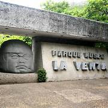
Un importante sitio arqueológico que alberga cabezas colosales de la cultura Olmeca.
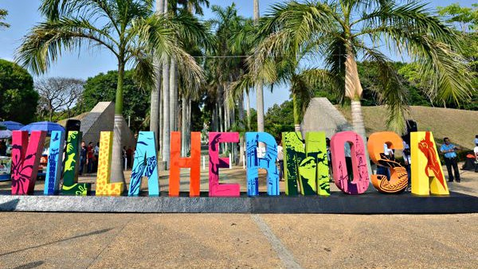
La ciudad de Villahermosa es la capital del estado de Tabasco, ubicado en el sureste de México. Su historia se remonta a la época prehispánica, cuando la región estaba habitada por diversas culturas indígenas que se dedicaban a la agricultura y a la pesca en las inmediaciones del río Grijalva. Durante la llegada de los españoles a la zona en el siglo XVI, se establecieron diversas expediciones en la región, lo que derivó en la fundación de la villa de San Juan Bautista de la Villa Hermosa en 1596.
A lo largo de los siglos, Villahermosa fue testigo de importantes acontecimientos históricos, como la lucha por la independencia de México, la Guerra de Castas y la Revolución Mexicana. Además, su ubicación estratégica y su rica biodiversidad la convierten en una región clave para el desarrollo económico del país.
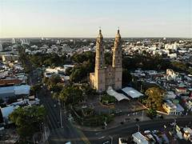

Un importante sitio arqueológico que alberga cabezas colosales de la cultura Olmeca.
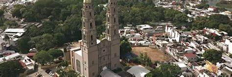
Una hermosa catedral que es un símbolo de la ciudad.

No se trata solamente de comer, sino de hacer un inolvidable recorrido por el Grijalva. Este paseo, que ya es tradición en Villahermosa, permite al visitante partir del malecón y abordar al Capitán Beuló para conocer la sabrosa gastronomía regional y disfrutar del paisaje, acompañados de música viva..
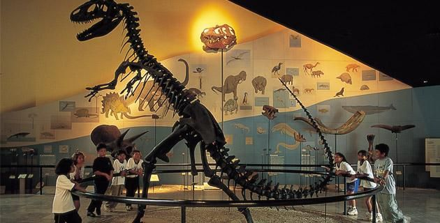
Junto con el Parque La Venta, este museo forma parte del gran Parque Tomás Garrido Canabal. El recorrido invita al conocimiento de la naturaleza y la evolución de la tierra, la vida y el hombre.
En este contexto es importante la sección dedicada a Tabasco, donde se pueden conocer los diversos ecosistemas de la región, con su abundancia de agua y sus grandes contrastes. El Museo de Historia Natural también ofrece conferencias, exposiciones temporales, talleres infantiles y otras actividades culturales.
La gastronomía de Villahermosa es rica y variada.
El pejelagarto asado es uno de los platillos más emblemáticos del sureste de México, especialmente del estado de Tabasco. Se prepara con el pez llamado pejelagarto (un tipo de pez alargado y con hocico parecido al de un lagarto), y es muy común en celebraciones y reuniones familiares.
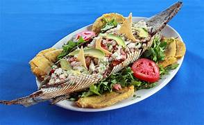
Los tamales tabasqueños son una joya de la cocina del sureste mexicano, especialmente de Tabasco. Se distinguen por su sabor intenso, el uso de ingredientes locales y, en muchos casos, por envolverse en hoja de plátano en lugar de hoja de maíz.
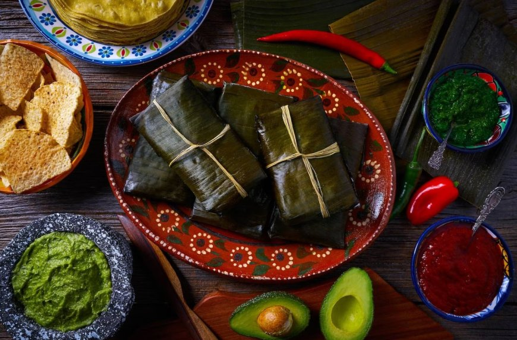
Sopa de puchero tabasqueño Un caldo sustancioso con carnes, verduras y plátano macho, muy típico en comidas familiares.
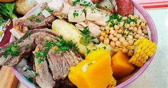
Chirmol Más que un platillo, es una salsa espesa hecha con jitomate, chile y especias, que acompaña carnes o pescados.

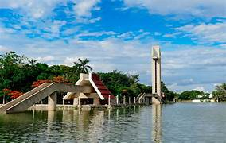
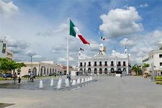
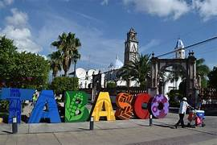
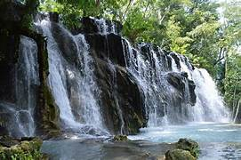
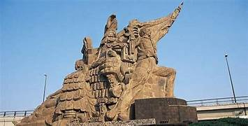
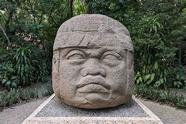
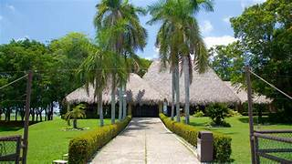
Para más información, contáctanos a través de este formulario.